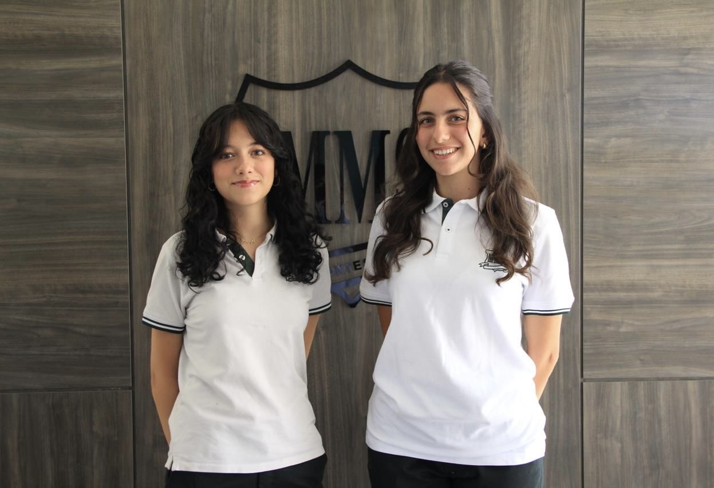

Meet the Team
Co-Secretary Generals

Lana Sehwail & Sersa Janbek
Deputy Secretary General
Nusaybah Elbusaifi
Head of Conference
Abdelghaffar Freihat
Head of Student Affairs
Yara Alrousan
Head of Public Affairs
Antone Qasir
Head of Organization
Hind Koudsi
This Year's Theme - A World on Trial
“The arc of the moral universe is long, but it bends toward justice – only if we bend it.”
– Dr Martin Luther King
These words echo through the ages, giving us hope that our progress towards global justice is inevitable – it awaits us. Change takes a long time, but it does happen. In an era marked by chaos and unrest, the world is no longer the witness, but the gallery – watching, spectating, and judging.
In “A World on Trial,” we face judgment for our collective actions and inactions, revealing the hypocrisy and ignorance of the global order towards the silenced. From the glory of peace to the neglected refugee camps, we discover that the systems and ideologies built to protect us are failing us. With this realization, we ask ourselves: Why are some voices amplified, while others are erased? This year, we put the world on trial. This theme isn’t a call for justice, but a call for accountability for the countless lives lost, the silent catastrophe that stems from our ignorance. In this conference, every committee is a courtroom. Every issue debated leads us to a larger verdict: Has the world upheld the justice it claims to stand for – or has it failed us?
The trial has begun.
The world is watching – but who is answering?